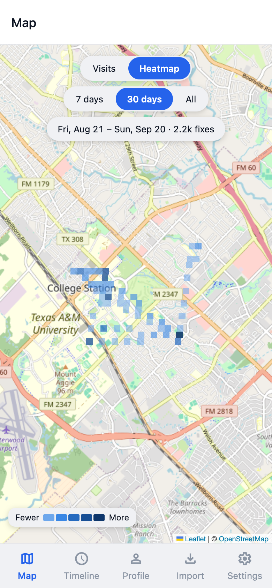
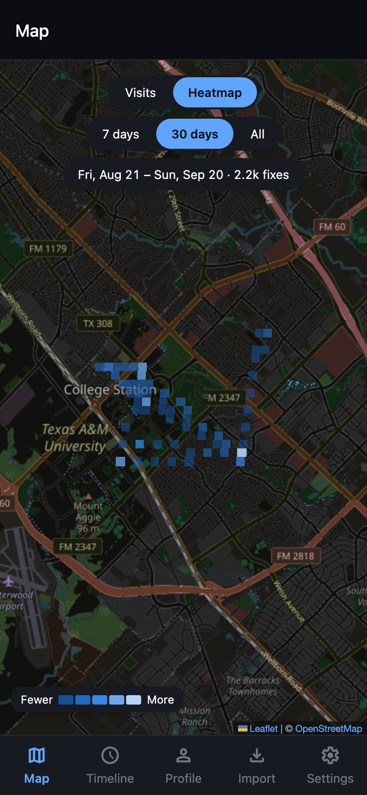
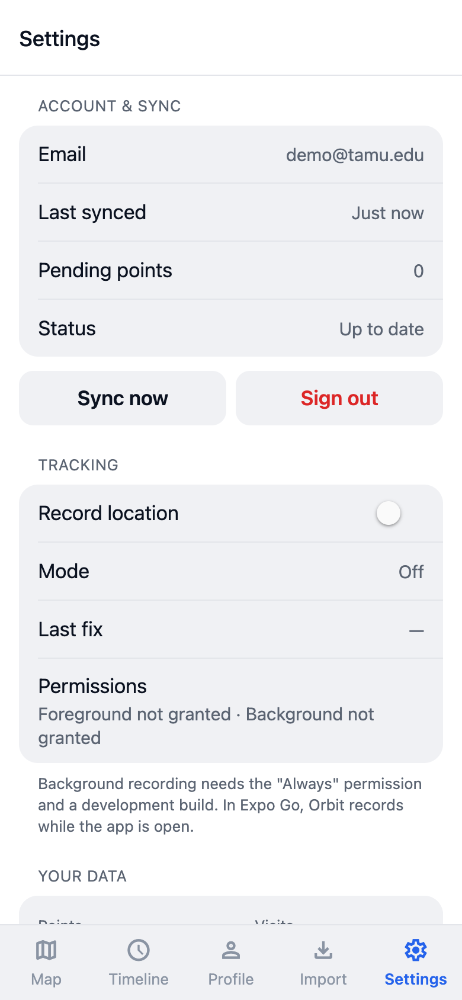
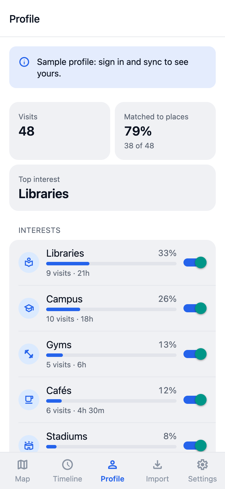
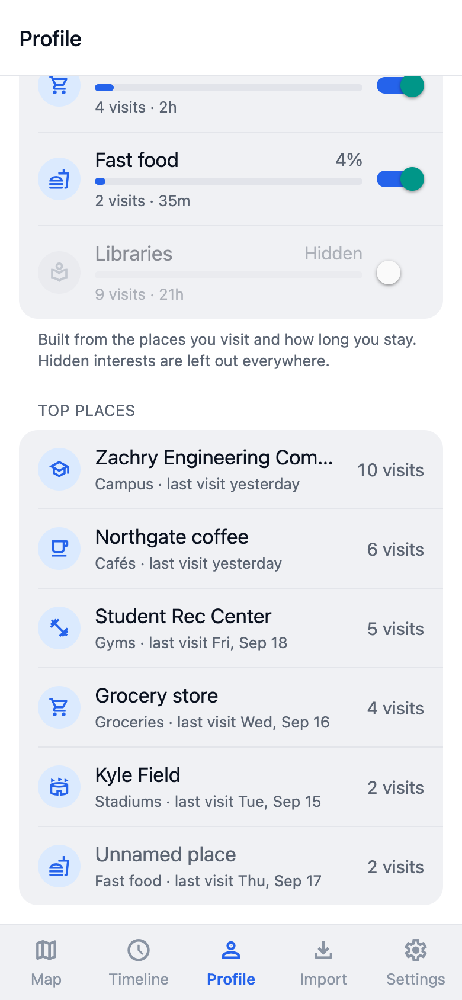
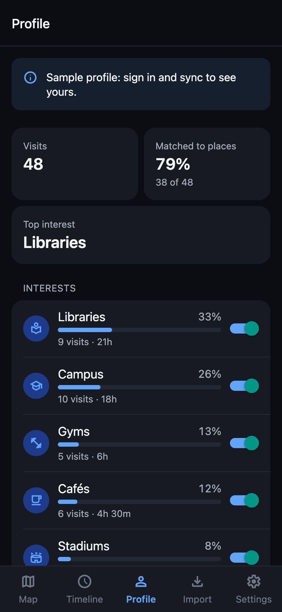

Orbit is a mobile app that records your location history on your own phone, imports your Google Timeline export, and shows your visits on a map and a timeline. Iteration 2 is about interpreting that history: turning each visit into a real place, and those places into an interest profile you can see and edit.
We split Iteration 2 in half. Part 1 (places and the interest profile) was built and merged this week. We agreed on a shared data contract first, so all five of us could start on day one without waiting for each other.
POST /visits/recompute attaches a place to each visit when the ranker is confident enough. GET /profile returns your interests and top places, and you can hide any category.main. 103 app tests and 133 backend tests pass, and every check CI runs (typecheck, tests, expo-doctor, backend tests) passes on main.These come from George’s harness (cd backend && python -m evaluation.places) on the committed synthetic set: 40 visits around campus, 36 at a real place and 4 deliberately at no place.
| Ranker | Top-1 | Top-3 | Precision | Recall | No place assigned |
|---|---|---|---|---|---|
| Nearest place (baseline) | 88.9% | 100% | 83.8% | 86.1% | 7.5% |
| Random (sanity check) | 22.2% | 69.4% | 0.0% | 0.0% | 92.5% |
| Roger’s ranker | 100% | 100% | 97.1% | 91.7% | 15.0% |
The ranker fixes the cases where distance alone gets it wrong, such as a café inside the library or a smoothie counter inside the gym. It is more cautious, though: it leaves 15% of visits without a place, compared with 7.5% for the baseline. Three of its four misses are real places it wasn’t confident enough to assign. This set is synthetic and tidy, so these numbers are optimistic. The real accuracy number will come from hand labels.
docs/eval/labeling-protocol.md: each of us labels only our own visits, and 10% get a blind second label so we can report agreement. Label files stay off GitHub; they are gitignored and covered by the IRB protocol./profile API now that sign-in and sync are merged.The goal is v0.5 beta: profile, recommendations and predictions live in the app. Part 1 is merged: visits get places, and the profile exists on both the server and in the app. Part 2 adds recommendations (including nearby suggestions), the next-place predictor, and the popularity baseline the recommender has to beat. The main risks are gaps in OpenStreetMap coverage (if a place isn’t in the index, no ranker can pick it), collecting enough labeled visits (roughly 300), and background tracking on real phones, which needs development builds.





